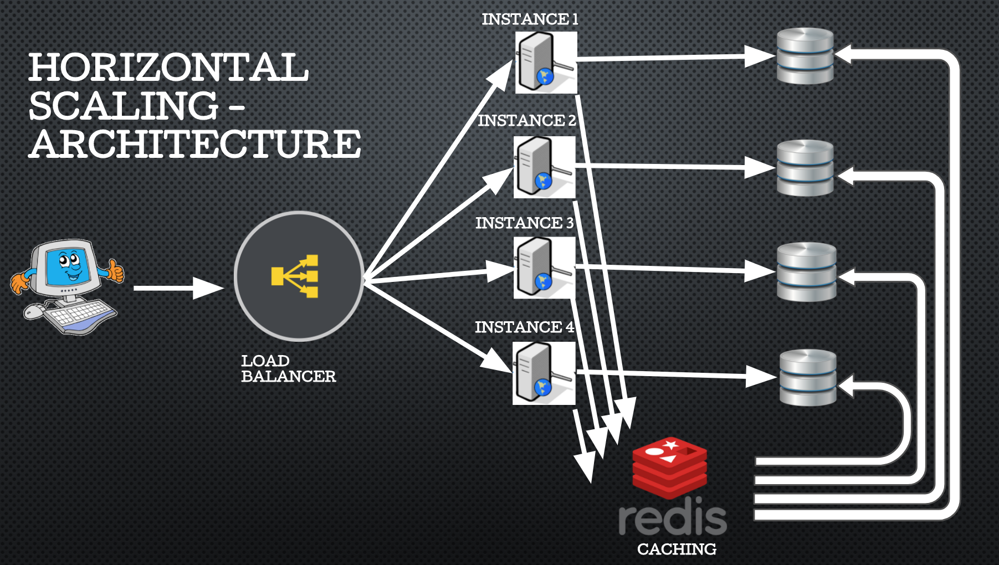

Magna primis lobortis
sed ullamcorper
On Heroku, imitate dyno scaling using multiple free applications instead of multiple dynos in a single application.


NanoTwitter (nT) is a baby version of Twitter designed as a platform for experimentation with scaling issues.
The objective of the Nanotwitter project was to give us hands-on experience designing a simple system which will expose and exercise issues of scale.
There was a lot of room for creativity.
While we did have some core instructions, we were allowed to use some interesting alternatives too in this project.
On Heroku, imitate dyno scaling using multiple free applications instead of multiple dynos in a single application.